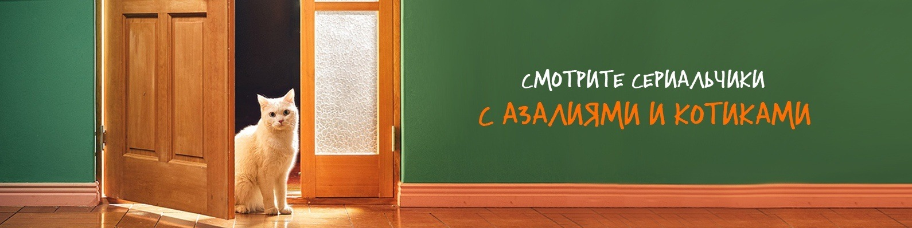

Фансаб-группа АЗАЛИИ - группа в контакте,
переводят тоже много и часто и даже с
корейского и японского. Часто их перевод
берет [SOFTBOX] Студия озвучки.
Дата основания и основная информация
Началом пути данной группы считается 29 сентября 2013 года.
На данный момент известно, что группа закончила 147 проектов.
Также данную команду можно поддерживать в финансовом плане(1 серия 60 минут - 1000 рублей)
